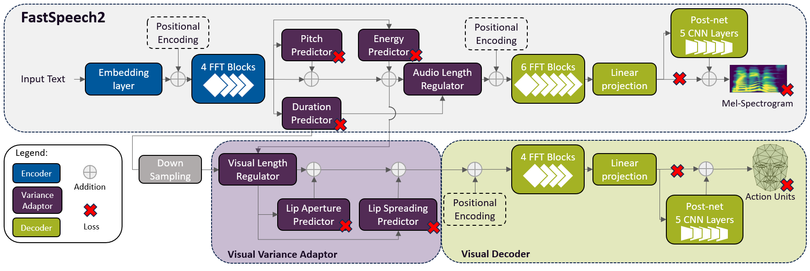

In this paper, we introduce FastLips, an end-to-end neural model designed to generate speech and co-verbal facial movements from text, animating a virtual avatar. Based on the FastSpeech2 Text-to-Speech model, FastLips integrates an audiovisual Transformer-based encoder with distinct audio and visual neural decoders. This model combines audiovisual representations computed by the shared encoder with asynchronous generation of audio and visual features. Furthermore, we enhance the model with explicit predictors of lip aperture and spreading, adapted from prosodic FastSpeech2’s variance adaptor. The proposed model generates mel-spectrograms and facial features (head, eyes, jaw and lip movements) to drive the virtual avatar’s action units. In our evaluation, we compare FastLips with a baseline audiovisual-Tacotron2, demonstrating the advantages of the FastSpeech2 architecture for lip generation. This benefit becomes particularly prominent when implementing explicit lip prediction.
FastLips Architecture

Demo Samples
FastLips-A&S stands for FastLips without lip predictors.